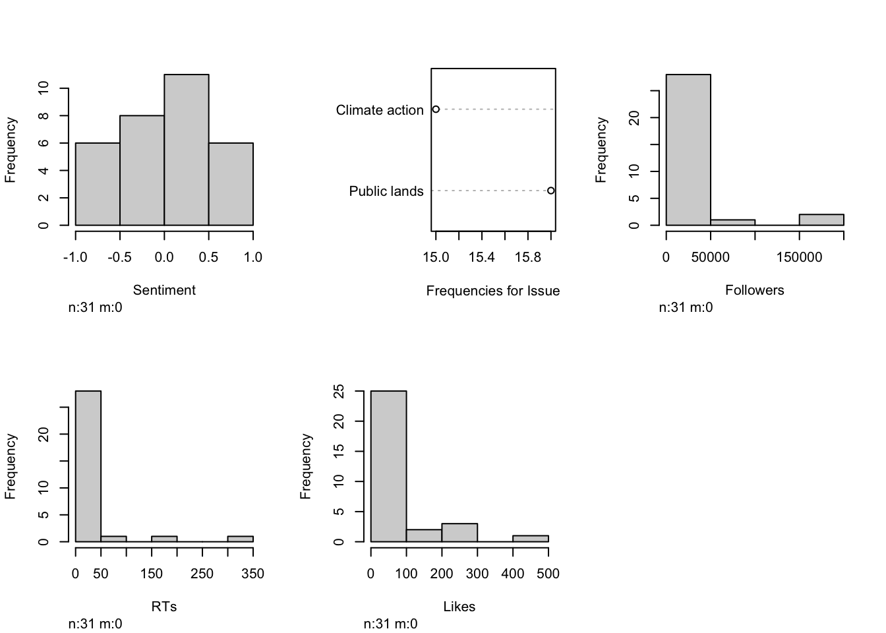
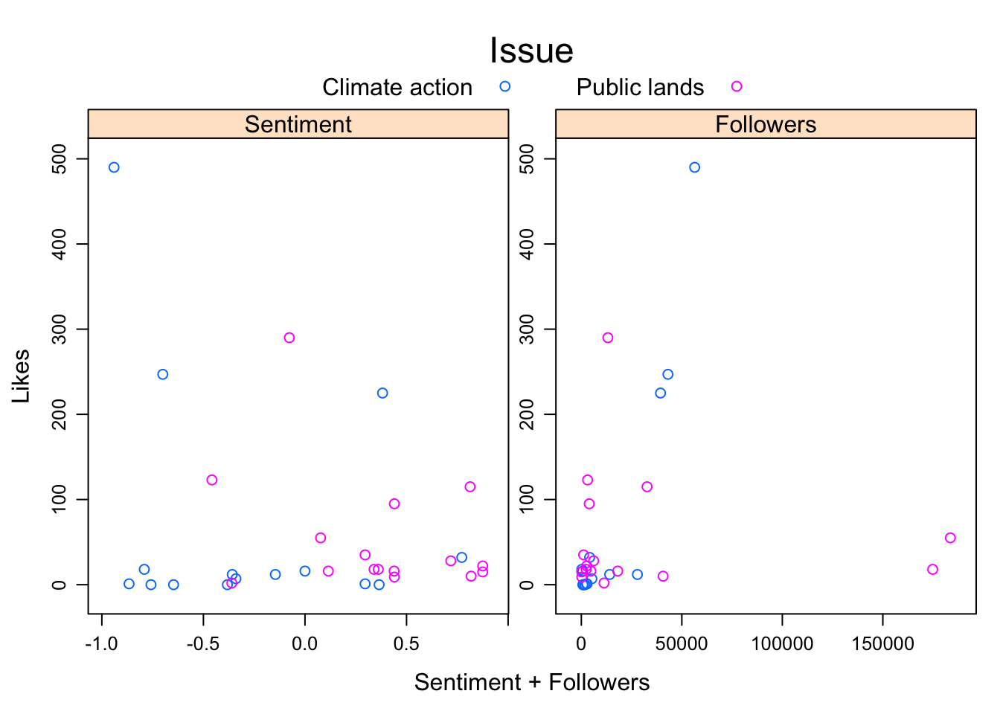
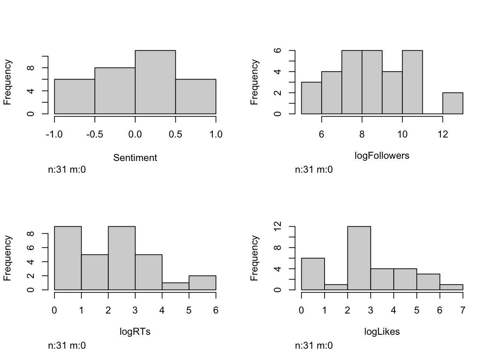
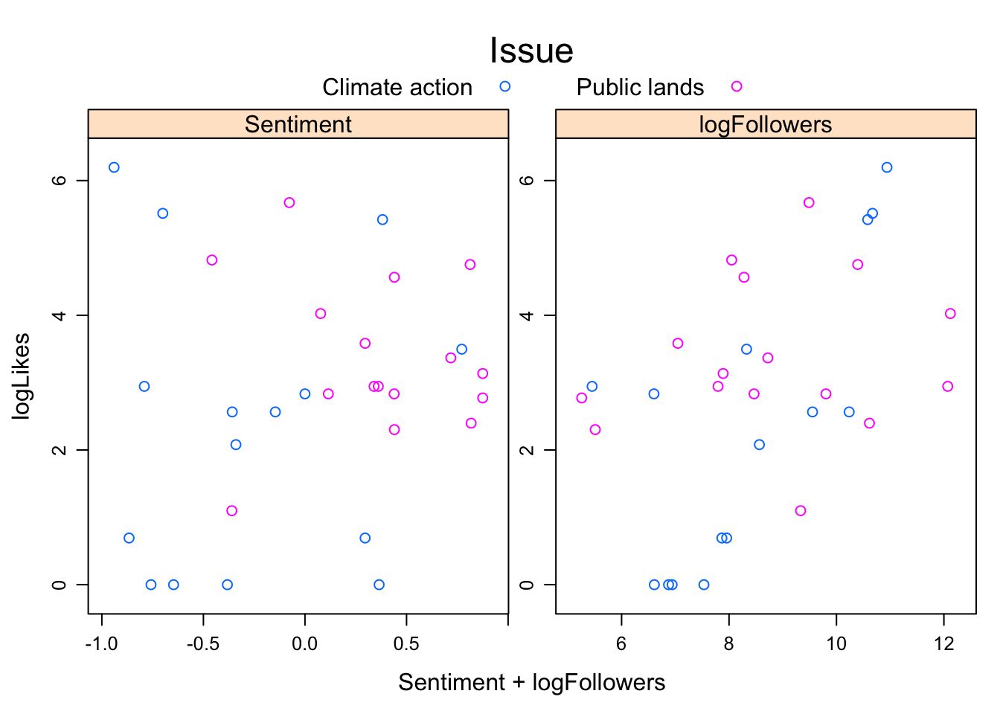
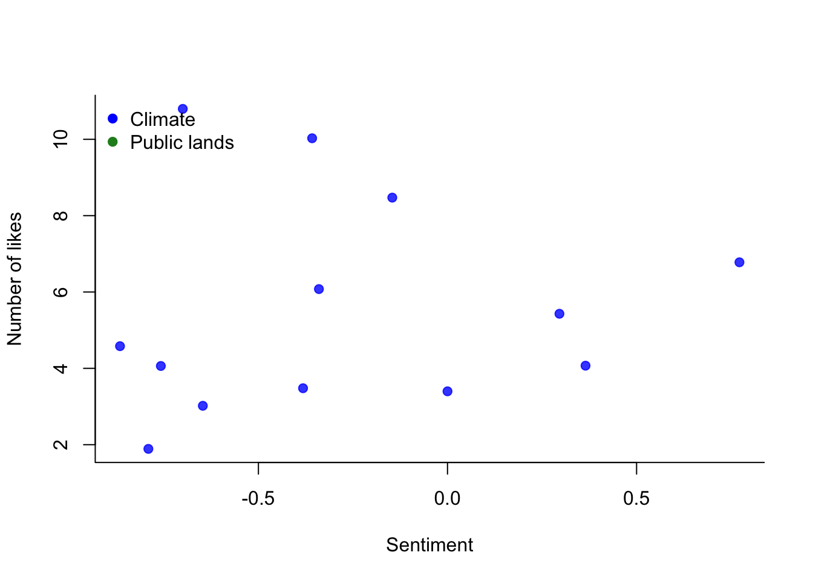
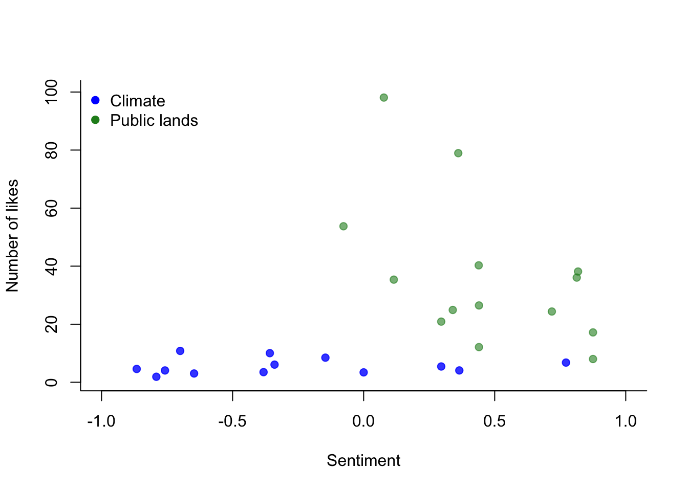

RStudio ServerPlease run this code in your console. This code reproduces the instructions in the instruction slides for Week 1 of this project (no worries if you get around to doing this on week 2, starting 11/9).
library(googlesheets4)
options(gargle_oob_default = TRUE) # this sets up an option for you to authenticate in your local browser rather than through the RStudio Server, which does not permit certain communication protocols; if you run this locally, you do not need to include this line
enviro_soc_media_DF <- googlesheets4::read_sheet("https://docs.google.com/spreadsheets/d/1hQy8kR81GHmMDPivpyd8XzAGU7A6oUCUArq1bltm5EQ/edit?usp=sharing")At present, we have a cleaned Text column and any other variables that you have chosen to input alongside the required columns (e.g. link to the post is one required field; the site, or which social media platform sourced the data, is another). Now we are going to move forward on converting the social media text data into a form that is amenable to statistical analysis.
Remember that the goal of this project is for you to think creatively about how environmental advocates, such as citizen science recruiting teams or political mobilization teams for land conservation or climate action/decarbonization ballot measures, could improve their digital messaging strategies by “crowd-sourcing” insight from public social media discourse.
As such, you will decide on some response variable. This could be something like measures of public engagement (e.g. retweets/shares/likes) or a measure you develop yourself (e.g. on a scale of 1-5, how appealing/motivating do I/do my friends find this message).
The code below shows how to use the function vader_df from the vader package to calculate the sentiment of each post. I store the output of this function in the variable sentiment_scores_DF.
## Creating a data.frame to store sentiment scores from the vader package
sentiment_scores_DF <- vader_df(envDF_tidy$Text, rm_qm=TRUE) # vader_df is a function that calculates sentiment scores for a column of data in a data.frame
head(sentiment_scores_DF[,3:6])## compound pos neu neg
## 1 0.365 0.160 0.719 0.121
## 2 -0.382 0.000 0.822 0.178
## 3 0.382 0.146 0.854 0.000
## 4 -0.700 0.051 0.718 0.231
## 5 -0.866 0.081 0.653 0.267
## 6 0.296 0.048 0.952 0.000In this project, you are required to analyze your environmental social media text data. The code above generates a data.frame containing sentiment scores, namely the proportion of each message that has positive (pos), negative (neg), and neutral (neu) terms, as well as a compound sentiment score that ranges from [-1, 1]. For the compound score, lower values (compount \(\rightarrow -1\)) indicate negative sentiment.
For your datasets, you may be interested in the following ways to numerically represent your Text column:
post_words <- tokenize_tweets(envDF$Text,strip_url=TRUE) # this creates a list where each entry has the message broken into individual words, using spaces as the breaks between individual words; don't worry about it being called "tokenize_tweets" -- this function is fine to use on other social media (text) posts
# you can see any individual entry by using the [[]] index operator for lists; e.g. post_words[[4]]
post_length <- unlist( lapply(post_words, length) ) # this gives you the length of each post in terms of the number of words it contains
post_unique_words <- unlist( lapply(post_words, function(x) {length(unique(x))})) # number of unique words per post.
# NB: length(post_unique_words) is always <= (less than/equal to) length(post_length)num_hashtags <- unlist( lapply(post_words, function(x) {length(grep("#",x))})) # number of hashtags in each post
num_user_mentions <- unlist( lapply(post_words, function(x) {length( grep("@",x))} )) # number of user mentions
norm_hashtags <- num_hashtags/post_length # depending on how you want to calculate the proportion of hashtags, you would use either post_length or post_unique_words as the denominator
# You could proceed with the same syntax as above to calculate the proportion of each message's words that mention/tag other users.
# Note that this assumes that your site (platform) uses "#" to denote hashtags and "@" to tag users.With this example dataset, I will show you how to fit a linear regression using Ordinary Least Squares (OLS). Using this sample, I am fitting the model:
\(Y (\text{Public attention (Likes/Retweets)}) \sim \beta_0 + \beta_1 (\text{Issue}) + \beta_2 \text{Post Sentiment} + \beta_3 \text{Number of followers}\)
This is an extension of the linear models that you ran in Project 1 for your climate blogs. In this linear model, I am testing several hypotheses. Note that \(H_0\) denotes null and \(H_a\) alternative hypothesis.
Issue is a categorical variable (not numeric), this basically means that the null is that the mean number of Likes/Retweets is consistent for public lands and climate action tweets.data.frame to store your model variables and addressing any issues of skewed variablesBelow, I show how to fit this linear model using lm. I start by constructing a modeling data.frame. (This step isn’t necessary, but it can be nice to have a dedicated data.frame containing only the relevant variables for your linear models.)
## Creating model data.frame
modelDF <- data.frame("Sentiment"=sentiment_scores_DF$compound,
"Issue"=factor(envDF_tidy$Issue),
"Followers"=envDF_tidy$Followers,
"RTs"=envDF_tidy$RTs,
"Likes"=envDF_tidy$Likes)
# In this section of code, I created names for columns using the convention "ColumnName" = variable
# NB: I **strongly** recommend making column names single words, or using CamelCase or Variable_Name_with_Underscores. Using punctuation or any other "whitespace" characters can cause issues down the line.It is always good practice to inspect your dataset and ensure that there isn’t anything weird or alarming. I show two ways to visualize your modeling dataset below.
hist.data.frame(modelDF, nclass=5) # the nclass option tells this function how many bins to have for the numeric variables.
Oofda! There is definitely skew in the number of followers, retweets (RTs), and likes. We see that the majority of the data points have 0 or very few of each entity, and a right-skewed tail of a few posts with a ton of retweets/likes, or a few authors with a ton of followers. Such skew is very typical of Internet data and language data in general. We’ll have to even out the variation in these data to ensure a better fit for our linear models.
In the plots above, most of the plots are histograms, which show the frequency of observations in different “bins”, or categories, of the data (e.g. posts with sentiment between -0.5 and 0 is one bin in the first histogram for Sentiment). However, the visualization for issue shows the number of observations for Climate action versus Public lands – this makes sense as these data are character (words), rather than numbers. The terms below each histogram show the total number of observations (n:31 observations) and missing values (m:0 - no missing values).
Another way to visualize your data is to see the distribution of numeric values and group the numeric values by categorical variable(s). In this case, we will group the numeric variables by Issue.
xyplot(Likes ~ Sentiment + Followers, data = modelDF, group = Issue, # format: y ~ x1 + x2 + ... xn. Do NOT include the grouping variable in y ~ x1 + ... + xn; note that group = Issue and Issue does not appear in Likes ~ x1 (Sentiment) + x2 (Followers)
auto.key = list(title = "Issue", columns = 2), scales="free"
)
# How would you use this command to display retweets on the y-axis in these plots?These plots again bear out that we’re going to have to do something about smoothing out the variation in Likes and Followers. Interestingly enough, it looks like there is a different relationship for Likes as a function of Sentiment for the Climate action versus Public lands posts. How might I specify that in the lm call later?
Now, we’ll turn our attention to creating variables in modelDF that deal with the right skew in our predictor variable, Followers, and the response variables, retweets and likes. Typically, a log transformation is a good way to deal with highly skewed data.
modelDF$logFollowers <- log(modelDF$Followers + 1) # note that log(0) --> -infinity. So we ensure that no observations are = 0 by including an offset of +1, which is a pretty trivial increment when you consider that some authors had more than 150,000 followers.
modelDF$logLikes <- log(modelDF$Likes + 1)
modelDF$logRTs <- log(modelDF$RTs + 1)We’ll inspect these new variables to see if we have actually succeeded in smoothing out the variation.
hist.data.frame(modelDF[,c("Sentiment","logFollowers","logRTs","logLikes")],nclass=5)
xyplot(logLikes ~ Sentiment + logFollowers, data = modelDF, group = Issue, # format: y ~ x1 + x2 + ... xn. Do NOT include the grouping variable in y ~ x1 + ... + xn; note that group = Issue and Issue does not appear in Likes ~ x1 (Sentiment) + x2 (Followers)
auto.key = list(title = "Issue", columns = 2), scales="free"
)
# As before, I leave it to you to modify the xyplot command to display logRTs on the y-axis if you would like to see that visualization.Great! We see much more even distribution across the range of values for the log-transformed variables.
The next code chunk shows how to specify the linear model described above in Section 3, which tests the various null hypotheses for the variables.
textLM <- lm(logLikes~Issue+Sentiment+logFollowers, data=modelDF)
clean_summary_DF <- summary(textLM)$coefficients # creating a data.frame to store the coefficient estimates from the summary() function
row.names(clean_summary_DF) <- c("Intercept","Issue=Public lands","Sentiment","Followers (log scale)") # creating nicer row names, where each row name denotes one of the variables in the model
kable(clean_summary_DF,digits=2) # using the kable function because this ensures that your output tables can play nicely with Word outputs.| Estimate | Std. Error | t value | Pr(>|t|) | |
|---|---|---|---|---|
| Intercept | -1.13 | 1.36 | -0.83 | 0.41 |
| Issue=Public lands | 0.86 | 0.69 | 1.25 | 0.22 |
| Sentiment | -0.03 | 0.61 | -0.05 | 0.96 |
| Followers (log scale) | 0.42 | 0.16 | 2.66 | 0.01 |
From this linear model summary, we see that:
IssuePublic lands estimate is 0.86, there is an indication that on average, conditional on a post discussing public lands instead of climate action, there could be a tendency for such posts to attract more likes.For Project 3, you’re welcome to stop here with your analyses. However, if you’d like to remove outliers, display linear model predictions graphically, and consider interaction effects\(^1\), please continue reading below.
\(^1:\) If interaction effects in linear regression models are unfamiliar, here are several helpful resources:
R code focused on ad sales across Facebook and YouTube, with an example interaction effectBelow, I’ll initially set up a model with an interaction effect between Issue and Sentiment. This is informed by my observation of the two xyplots above. I wondered if there were differing relationships between sentiment and attention (Likes/Retweets) for public lands versus climate action posts.
We now add on an additional covariate and thus null hypothesis, which is:
\(Y (\text{Public attention (Likes/Retweets)}) \sim \beta_0 + \beta_1 (\text{Issue}) + \beta_2 \text{Sentiment} + \beta_3 \text{Number of followers} + \beta_4 \text{Sentiment * Issue}\)
\(H_{0,4}: \beta_4 =0; H_{a,4}: \beta_4 \neq 0\); if we reject the null, then we conclude that there is a significant interaction effect between sentiment and issue on the dependent variable.
textLM <- lm(logLikes~Issue+Sentiment+logFollowers+Sentiment*Issue, data=modelDF) # I specify the interaction using the syntax Sentiment*Issue (X1*X2)
clean_summary_DF <- summary(textLM)$coefficients
row.names(clean_summary_DF) <- c("Intercept","Issue=Public lands","Sentiment","Followers (log scale)","Sentiment: Public lands")
kable(clean_summary_DF,digits=2)| Estimate | Std. Error | t value | Pr(>|t|) | |
|---|---|---|---|---|
| Intercept | -1.13 | 1.41 | -0.80 | 0.43 |
| Issue=Public lands | 0.87 | 0.72 | 1.21 | 0.24 |
| Sentiment | -0.01 | 0.80 | -0.01 | 0.99 |
| Followers (log scale) | 0.42 | 0.16 | 2.59 | 0.02 |
| Sentiment: Public lands | -0.05 | 1.27 | -0.04 | 0.97 |
While we cannot reject the null hypothesis for the interaction effect between sentiment and issue, we do observe that it seems that sentiment has an indeterminate effect on the number of likes for posts in general. However, as the \(\beta_4\) estimate has a more negative magnitude than \(\beta_2\), suggesting that for public lands posts, sentiment may be negatively related to the number of likes.
The code below shows how to remove outliers (background on outliers in the context of R linear regressions) from your dataset based on the model itself. Remember that the plot(textLM) command would be one way to (informally) assess major deviations from the assumptions of linear regression.
I show how to use Cook’s Distance (brief lecture from Pennsylvania State University on Cook’s Distance) in the chunk below to detect and then remove outliers.
cooksD <- cooks.distance(textLM) # calculate Cook's Distance metric for each point in the textLM linear regression model
cooksD_threshold <- 4/nrow(modelDF) # threshold for highly influential (outlier) data points
influential_obs <- which(cooksD > cooksD_threshold) # this returns the indices for outlier data points
modelDF_no_outliers <- modelDF[-influential_obs, ] # we use the -vector convention to remove the entries (rows) that are outliers; this is an example of a subsetting operationNext, we can re-run the model and see how the coefficients do or do not change.
textLM_no_outliers <- update(textLM, data=modelDF_no_outliers) # I use the update command to re-run the linear model with the interaction effect (the last--immediately preceding--version of the textLM object) with the data.frame that has the outliers removed.
clean_summary_DF <- summary(textLM_no_outliers)$coefficients
row.names(clean_summary_DF) <- c("Intercept","Issue=Public lands","Sentiment","Followers (log scale)","Sentiment: Public lands")
kable(clean_summary_DF,digits=2)| Estimate | Std. Error | t value | Pr(>|t|) | |
|---|---|---|---|---|
| Intercept | -0.28 | 1.27 | -0.22 | 0.83 |
| Issue=Public lands | 1.70 | 0.83 | 2.04 | 0.05 |
| Sentiment | 0.14 | 0.77 | 0.18 | 0.86 |
| Followers (log scale) | 0.27 | 0.15 | 1.78 | 0.09 |
| Sentiment: Public lands | -0.85 | 1.45 | -0.59 | 0.56 |
Note that when the outliers are removed, we see a very different pattern in the data. While none of the \(\beta\) coefficient estimates are significant, we see interesting patterns in the estimate column nonetheless. The impact of followers on the number of likes trends toward significance (\(p = 0.09\); typically the threshold for “trending toward significance” is 0.1) and gestures to a postive relationship where having more followers tends to enhance the number of likes a post receives (which makes sense, given how the social media algorithms farm out posts to people’s timelines).
On the other hand, we see a reversal for the coefficient estimate for sentiment. In general, more positive sentiment may be associated with more likes, though this relationship is not significantly different from 0. However, the sentiment:public lands interaction indicates that for public lands posts, more negative posts tend to receive more likes.
In your bullet point outlines and final reports (Assignments 2 and 3), I expect that you will include sections on your interpretation on your findings and recommendations for improving environmental social media communications and/or future work priorities for environmental social media communications research.
Finally, in this code section, I show how you can display the predictions of your linear model across the range of values you have observed for your predictor variables. This can provide added insight, even if the coefficient estimates are not significantly different from 0 (\(H_{0,i}\) cannot be rejected for \(\beta_i\)). We can at least discern if there are tendencies or trends emerging in the data and model. Note that a small sample size typically means that an effect must be that much larger to reach statistical significance–this is due to smaller datasets typically having a larger ratio of noise:signal (reflected in larger values of standard errors for each coefficient estimate).
The plot below shows how to use plot and points to display the predictions of textLM_no_outliers for the variable Sentiment and break up your observations between two issues (or two platforms). You could adapt/extend this code to cover cases where you have multiple issues (3+) or sites (3+).
## 1: Generate model predictions
pred_ys <- exp(predict(textLM_no_outliers))-1
# We exponentiate the predictions because we log-transformed the number of Likes originally
# This ensures that the predictions are on the same scale as the observed number of Likes in this dataset (rather than on a log-transformed scale)
## 2: Plot the predictions for sentiment
# 2.1: We first find the indices for the observations that correspond to climate action
climate_action_indices <- which(modelDF_no_outliers$Issue=="Climate action")
# 2.2: Next we instantiate a plot for just the climate action posts and model predictions
plot(modelDF_no_outliers$Sentiment[climate_action_indices],pred_ys[climate_action_indices],
bty="L", # change the box type of the plot
pch=19, # use closed circles as point symbols
col=scales::alpha("blue",0.8), # use some transparency for the points to be able to see overplotted points
xlab="Sentiment",
ylab="Number of likes")
points(modelDF_no_outliers$Sentiment[-climate_action_indices],pred_ys[-climate_action_indices],pch=19,col=scales::alpha("forestgreen",0.6)) # this command adds points for the public lands posts; this works because this dataset has only either Climate action or Public lands posts.
legend("topleft", # legend location argument - top left of plot
legend=c("Climate","Public lands"), # labels to display describing your (categories) of data
col=c("blue","forestgreen"), # colors differentiating your categories (how would you do this for different line symbols or point symbols if you kept the colors the same otherwise?)
pch=c(19,19), # display closed-circle points for both categories
bty="n") # do not include a box around the legend
# How would you modify this code if you had 3+ issues or were comparing the same issue across sites?
# Note that you can move the legend around in your plots by specifying different position arguments (e.g. "topright","bottomleft", etc.) or even giving values for x and y positions within the plotting range.Oh shoot! We can’t see the predictions for public lands posts, which should be shown in . What could be the source of this issue?
If we look back at the xyplots outputs from before, we can see that the public lands posts tended to have a different range of values for sentiment (X) and likes (Y). You can always see what the range of values are for some particular variable by using the subsetting operation and the range or summary functions, e.g.:
range(modelDF_no_outliers$Sentiment[-climate_action_indices]): This tells us how we would need to modify the x-axis limits (xlim)range(pred_ys[-climate_action_indices]): Ditto for y-axisplot(modelDF_no_outliers$Sentiment[climate_action_indices],pred_ys[climate_action_indices],
bty="L", # change the box type of the plot
pch=19, # use closed circles as point symbols
col=scales::alpha("blue",0.8), # use some transparency for the points to be able to see overplotted points
xlab="Sentiment",
ylab="Number of likes",
xlim=c(-1,1),ylim=c(1,100)) # ok! We need to expand the range of the x and y-axes
points(modelDF_no_outliers$Sentiment[-climate_action_indices],pred_ys[-climate_action_indices],pch=19,col=scales::alpha("forestgreen",0.6))
legend("topleft",legend=c("Climate","Public lands"),col=c("blue","forestgreen"),pch=c(19,19),bty="n")